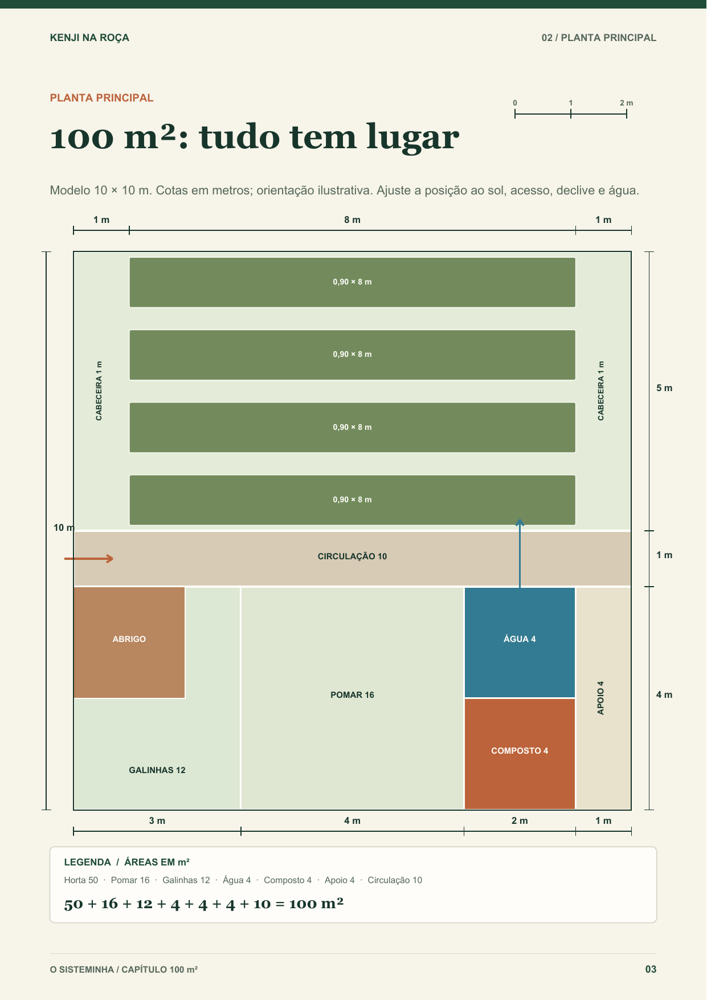
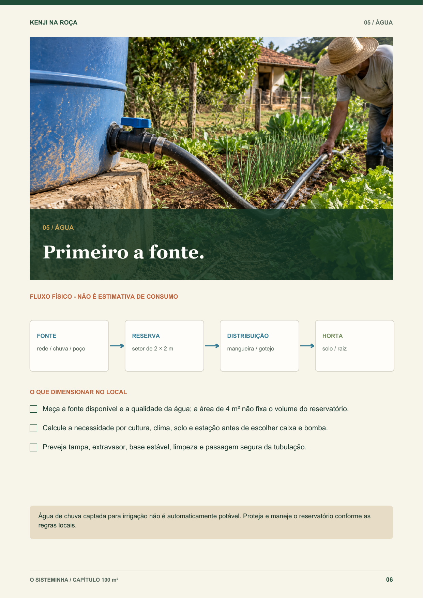
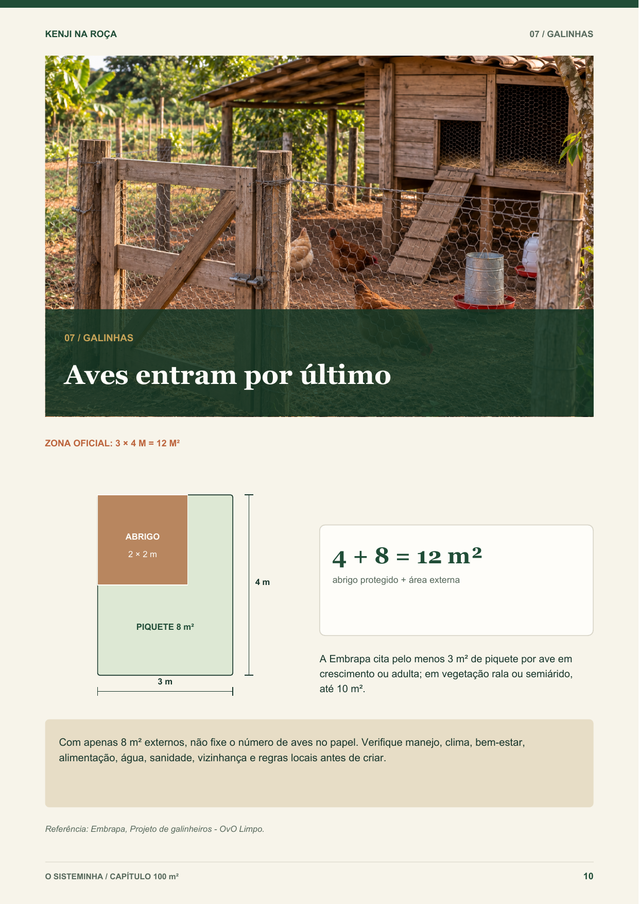

Comece do seu jeito
- Horta produtiva
- Área de água
- Pom ar e galinhas
KENJI NA ROÇA LIVRO DE CAMPO
Projetos de 100, 250 e 500 m²
para organizar horta, água, pomar e galinhas.
A planta é um modelo. O terreno real é quem manda.
QUERO MEU EBOOK AGORA →R$ 37,90pagamento único

Pagamento 100% seguroProcessado por Hotmart
Acesso imediatoO PDF chega após a compra
Garantia de 7 diasDevolução completa, sem perguntas
Pagamento únicoSem mensalidades
CONHEÇA O KENJI
O Sisteminha reúne projetos-base, medidas, decisões e pontos de atenção para você entender seu espaço antes de sair fazendo.
COMO FUNCIONA
O mesmo método, adaptado para o seu espaço. Horta, água, pomar, galinhas e circulação organizados como um sistema.
O QUE VOCÊ VAI ENCONTRAR
O livro mostra decisões de planejamento, marcação, circulação, infraestrutura, água, horta, galinhas, pomar, compostagem, orçamento e adaptação.
VER O QUE VEM NO EBOOK →


PÁGINAS REAIS
Você recebe um ebook digital com modelos-base, medidas e explicações para adaptar ao seu terreno.
Veja áreas, circulação e setores antes de começar.
Comece pela fonte e dimensione no seu contexto.
Use o setor como referência e confirme o manejo local.
O SISTEMINHA DO KENJI
Um guia prático para organizar o terreno com clareza e começar pelo que é possível no seu espaço.
FERRAMENTAS PRÁTICAS
Materiais de apoio para colocar o projeto em ação.
Para organizar informações e medidas do seu espaço.
Para auxiliar nos cálculos e na distribuição do terreno.
Para conferir o que considerar antes da execução.
Para acompanhar as etapas iniciais de implantação.
Para revisar os pontos antes de colocar o projeto em prática.
SUA COMPRA É SEGURA
Você tem 7 dias de garantia. Se por qualquer motivo achar que o livro não é para você, pode solicitar o reembolso.
DÚVIDAS FREQUENTES
O ebook é digital em PDF e o acesso é enviado após a confirmação do pagamento.
É um ebook digital. Você pode ler no celular, tablet ou computador.
O livro traz projetos-base de 100, 250 e 500 m² e orienta a adaptação ao terreno real.
Não. O conteúdo foi pensado com linguagem simples e uma sequência prática de decisões.
Planner do Terreno, Calculadora de Áreas, Checklist de Materiais, Calendário dos Primeiros 90 Dias e Guia Antes de Começar.
Você tem 7 dias para solicitar reembolso, caso o ebook não seja útil para você.
KENJI NA ROÇA · LIVRO DE CAMPO
O seu terreno pode produzir mais quando o planejamento respeita a realidade dele.
QUERO MEU EBOOK AGORA →